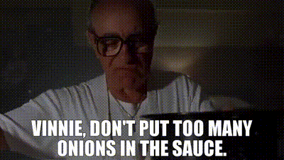

Chicken Parmesan

Description
This is a recipe passed down from generation to generation, just make
sure not to put too many onions in the sauce...
Ingredients
Listen up, the ingredients are simple... Just don't be a wise guy about
it.
- 4 Boneless skinless chicken breasts
- 1 Cup all purpose flour
- 1 Tablespoon salt
- 1/2 Teaspoon pepper
- 1 Teaspoon garlic powder
- 2 Large eggs
- 1 Cup panko bread crumbs
- 1 Cup italian style bread crumbs
- 3/4 Cup freshly grated parmesan cheese divided
- 1/4 Cup olive oil
- 1/4 Cup butter
- 2 Cups marinara sauce
- 8 Ounces fresh mozzarella
- 1/4 Cup chopped fresh basil
Steps
-
Preheat oven to 450 degrees F. Lightly grease a 9x13 baking dish and
set aside.
-
Place out 3 shallow dishes. Fill the first with flour, salt, pepper
and stir together. In the second dish whisk eggs. In the third dish
stir together both bread crumbs, garlic powder, and 1/2 cup grated
parmesan cheese.
-
Coat the chicken breasts in the flour mixture, then dip into the egg
mixture to coat, then roll in the bread crumb mixture until well coated.
Set aside.
-
Pour the olive oil into a heavy skillet and add in butter over medium
high heat. Once butter has melted, add in chicken and fry for 2-3 minutes
on each side until chicken is browned on both sides. Transfer chicken to
the lightly greased baking dish.
-
Spread marinara on top of each chicken breast. Top each breast with two
slices of mozzarella and sprinkle on remaining 1/4 cup parmesan cheese.
-
Bake in the preheated 450 degree oven until cheese is bubbly and browned
and chicken is cooked through, 15-20 minutes. Sprinkle with fresh basil
and serve hot.